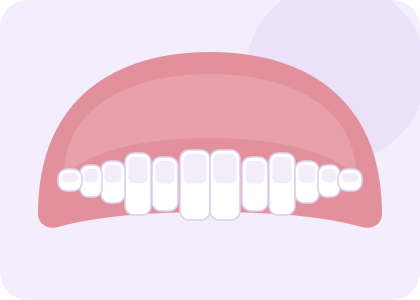

Full dentures
A complete replacement for an upper arch, a lower arch, or both. A full denture does more than replace teeth: it supports your lips and cheeks, which is what stops the face looking sunken after natural teeth are lost.
We record the shape of your gums, how your jaws meet and how your lips move when you speak and smile, then set the teeth to suit your face rather than to a standard template. You see and approve the arrangement at the wax try-in, while everything can still be changed.
- Premium or standard tooth moulds and shades
- High-impact acrylic base as an option for heavy wear
- Copy dentures available if you like the shape you already have